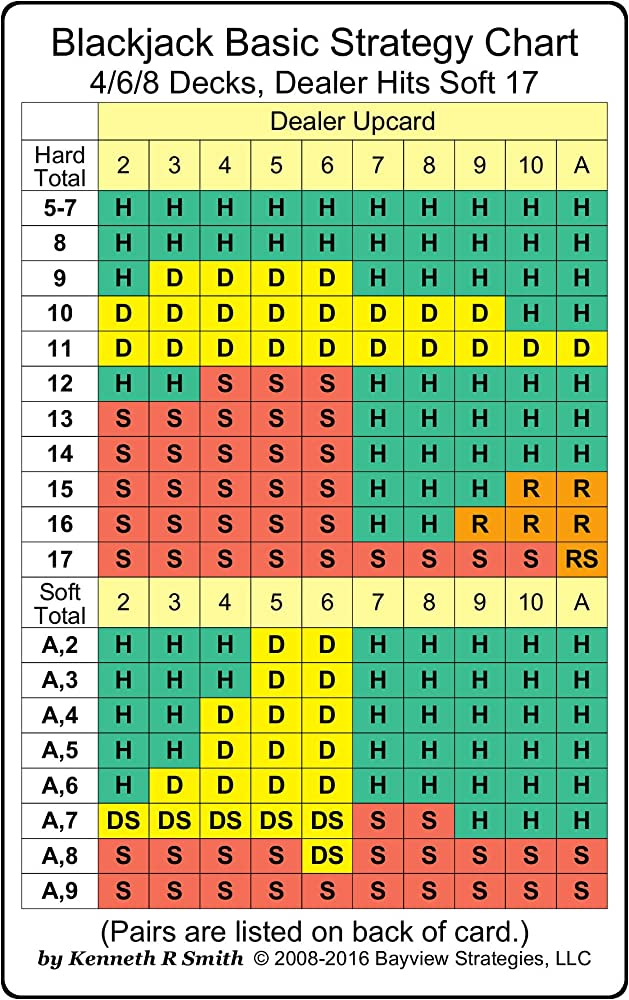

<template>
  <div class="MainContainer">
    <div class="TitleImg center">
      
    </div>

    <div class="single-wide">
      <h1>Blackjack 101</h1>
      <h2>Understanding Blackjack </h2>
      <p>Blackjack is one of the most popular games in the casino. The game offers some excellent odds for the player, which is why many players will head straight for the blackjack section of an online casino. When played correctly the casino has only a 1%  house advantage. By practicing the game and using some basic strategies, the house edge is only 0.5%, so knowledge is power and players who understand the game have much better opportunities to collect payouts when playing basic blackjack or some variations. Once you're ready, <a class="link" href="https://wizardofodds.com/play/blackjack/">click here to practice blackjack </a></p>
      <h3>Blackjack Objective </h3>
      <p>Ask Blackjack players what they believe is the primary objective of the game and they will tell you its to try to come close to 21 as possible. This however is not the true objective of the game. The ultimate goal in Blackjack is simply to beat the dealer. This can be done with many different hand values. It is possible to beat the dealer with a hand that is valued at just 13, making the 21 aspect not the true objective. Because the dealer can bust and must continue to draw cards up to a min of 17, players will often win with much lower hands. Remember  that the goal is to beat the dealer, either by having a higher valued hand that is below or equal to 21 or letting the dealer bust. </p>
      <h3>Card Values </h3>
      <p>There are different types of hands that are created when playing blackjack and players will use all of the cards in the deck. The main twist with blackjack is that the Ace can be worth 1 or 11, whichever will benefit the player most. All other cards are worth face value(number on card). Jack, Queen and King are worth 10 each. </p>
      <ul>
        <li><em>Hard Hand</em>– When playing blackjack, players will hear the term Hard Hand. This means that the hand does not have to contain an Ace, but it can. The value of the ace will be 1 instead of being 1 or 11. </li>
        <li><em>Soft Hand </em>- With a Soft Hand, the Ace can be 1 or 11 and players will have more chances to draw and beat the dealer. With a soft hand, the Ace will usually count as 11, so a hand with an Ace and a 5 is considered a soft 16. </li>

      </ul>
      <h3>Single Deck and Multiple Deck Blackjack Games </h3>
      <p>Casinos offer different types of games and players will find blackjack games that use a single deck of cards and those that use multiple decks. Whenever possible, it is beneficial for players to choose a single deck game. The reason for this is that players will get more blackjack hands when playing with a single deck. It can also benefit those that count cards since it is easier to keep track of just 52 cards in play. Thats an advance tip VDF offers....card counting.With multi-deck games, players will see casinos using between 2 and 8 decks on most blackjack games. The number of decks used will vary based on the blackjack variation that is selected. 2 deck games are rare, but when players can find them, they are beneficial to play.</p>
      <h3>The Play </h3>
      <p>The game begins with placing a bet on the table, which can vary per casino. Always check the game minimum and maximum bet amount. Once bets are placed, the dealer will deal two cards to each player and two to himself, one face up and one face down. Based on the value of player cards, they can choose to do different things. The game choices are explained below and each of these options can be used to improve the odds of winning. </p>
      <ul>
        <li><em>Blackjack/21</em>– If players are dealt an Ace and a face card or a ten, they will immediately receive a payout as this is a blackjack. </li>
        <li><em>Hit</em>– If players desire, they can hit and take an additional card to increase their hand value. This can be done as many times as needed. </li>
        <li><em>Stand</em>– When players do not wish to make any more moves, they will choose to stand and their turn ends. </li>
        <li><em>Double Down</em>– With the double down option, players will double their bet amount and take only one more card. </li>
        <li><em>Insurance </em>– If the dealer card is an Ace, players can take Insurance. This is a side bet on whether the dealer has a blackjack. The bet offers even money in return, but there is a high house edge, <em>so players should avoid taking insurance. </em> </li>
        <li><em>Surrender  </em>– The surrender option allows players to only risk half the bet amount. This is a good option when players are sure they will lose the hand.  </li>
      </ul>
      <h3>Using A Blackjack Strategy </h3>
      <p>To benefit from the low house advantage and have the most success playing real money blackjack, players should learn and always use the basic Blackjack Strategy. While it can be difficult to memorize all actions, players will lower the house advantage by understanding this basic Strategy card, but you will not be able to reference it while playing at the casinos. </p>
      <p>A basic strategy card will tell players when to hit, stand, double, split or surrender. Using this strategy will reduce the house edge to the lowest of 0.5% and will provide players with the best opportunities to win. </p>
      <h5>Strategy Chart</h5>
      
      <h3><a class="link" href="#">Click here to learn a few advanced BlackJack Strategies </a></h3>
    </div>
  </div>
</template>
